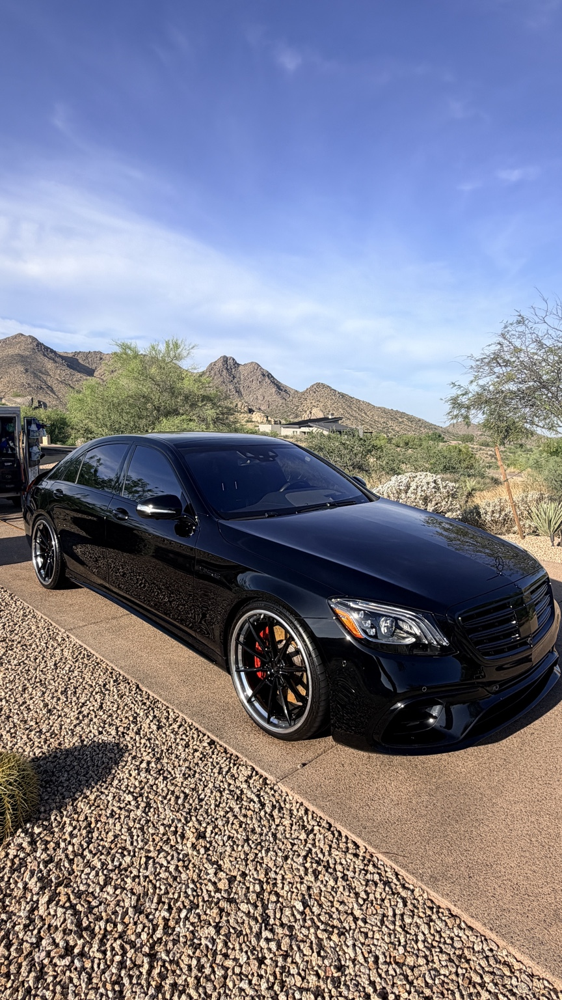
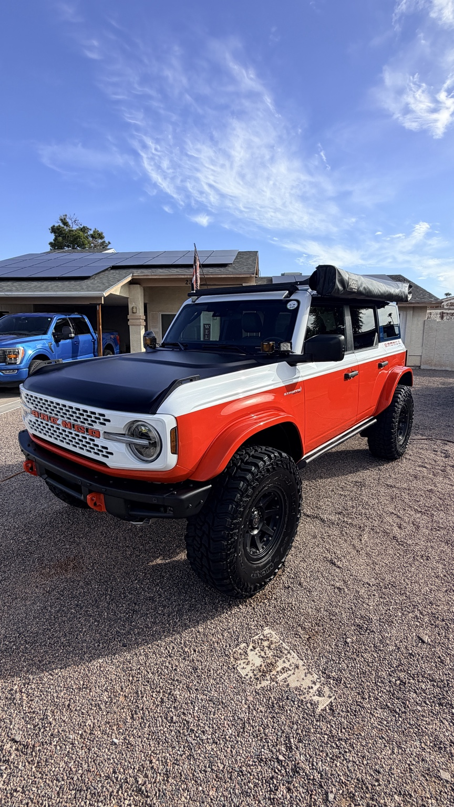
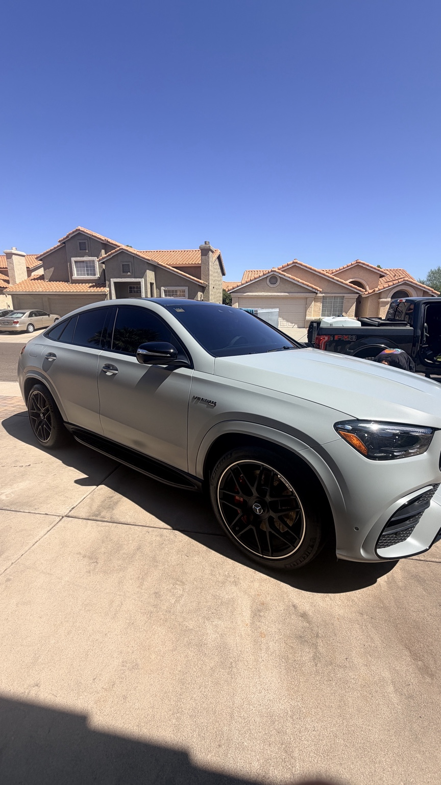
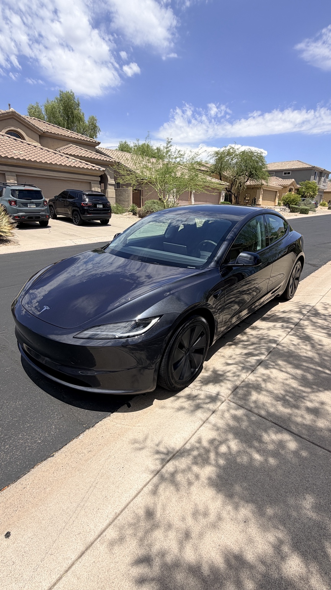

Our Work
Explore a selection of vehicles professionally cared for by Apex Mobile Detailing.
Professional Vehicle Care
From luxury SUVs to performance cars and everyday vehicles, Apex Mobile Detailing focuses on quality cleaning, presentation, and vehicle protection. Browse the gallery below to see examples of professionally maintained vehicles.






See Professional Detailing in Action
Watch an example of professional vehicle polishing and paint care. This video demonstrates techniques used in automotive detailing.
Video footage: Pavel Danilyuk / Pexels. Illustrative stock footage.
Ready to Refresh Your Vehicle?
Explore our detailing services or contact us to learn more about vehicle care.
Request Service